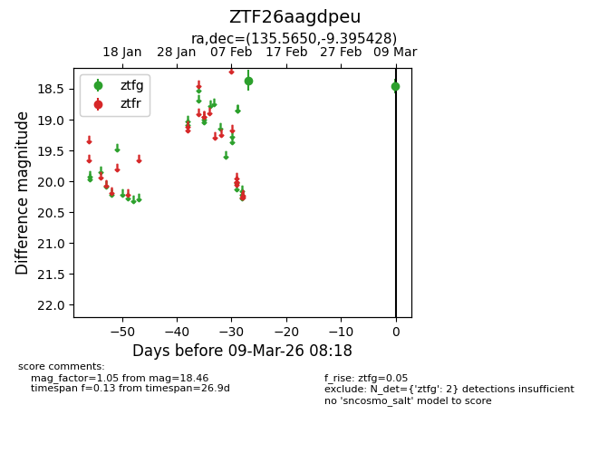
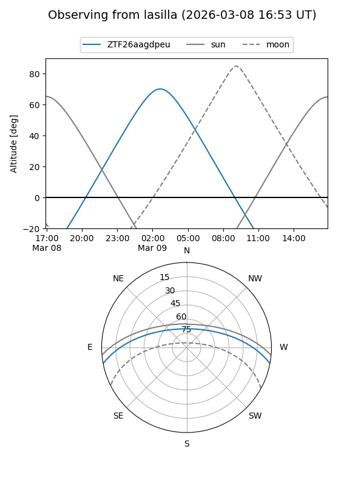
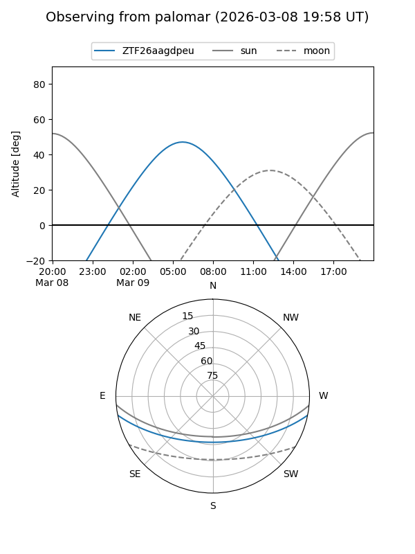

ZTF26aagdpeu
Target ZTF26aagdpeu at 2026-03-09 08:20
Aliases and brokers:
FINK: link
Lasair: link
ALeRCE: link
alt names
ZTF26aagdpeu (ztf,fink_ztf)
Coordinates:
equatorial (ra, dec) = 135.5650,-9.39543
equatorial (HMS+DMS) = 09:02:15.61,-09:23:43.54
galactic (l, b) = (238.0025,+23.57762)
Flags:
Photometry:
last ztfg=18.46
2 ztfg detections
Lightcurve

Visibility


Additional plots